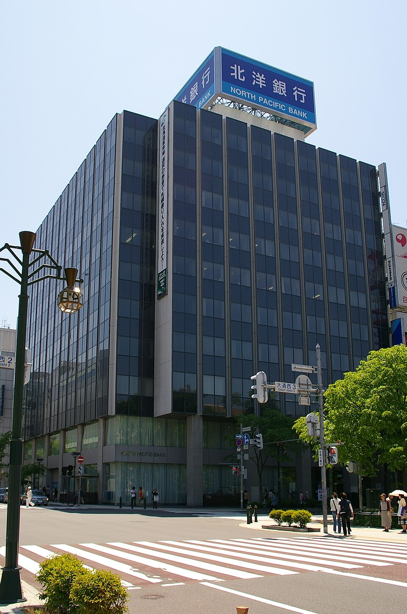
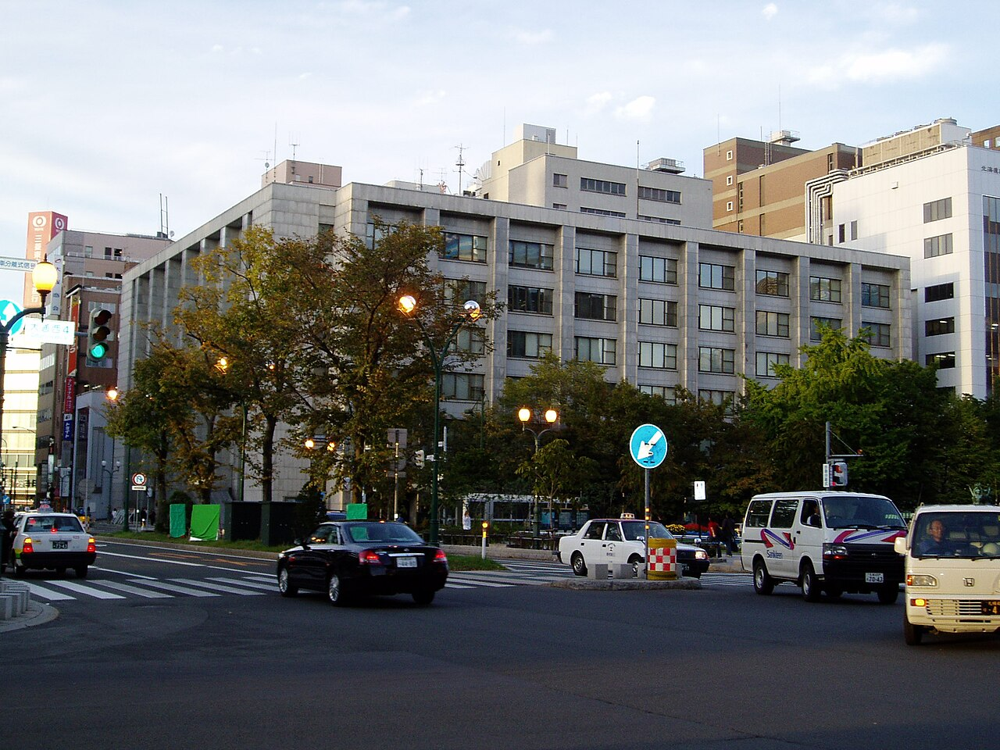
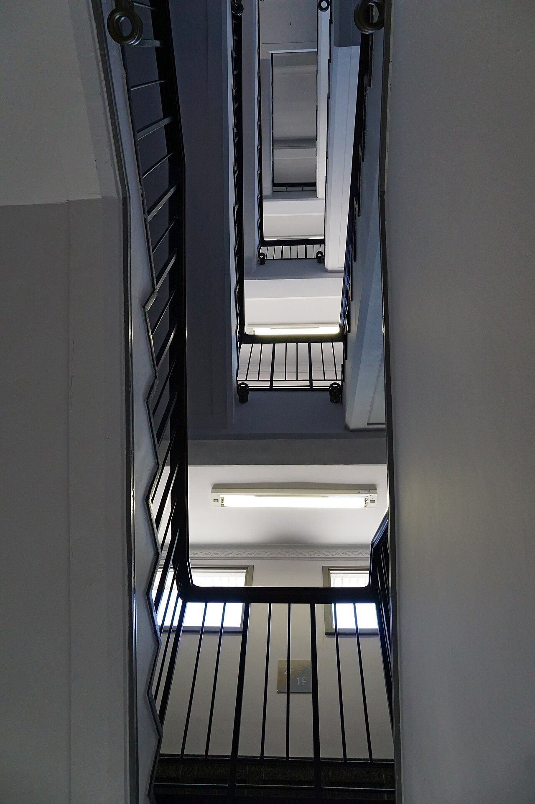
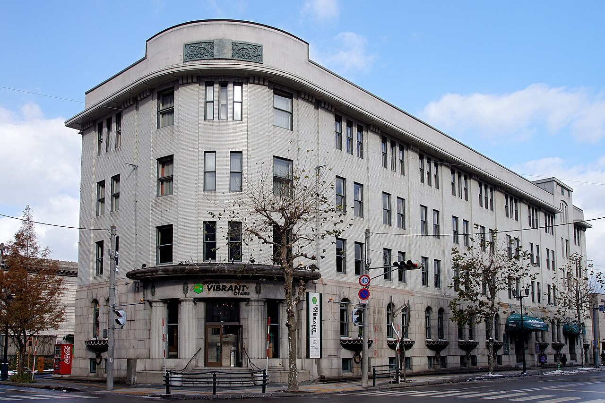
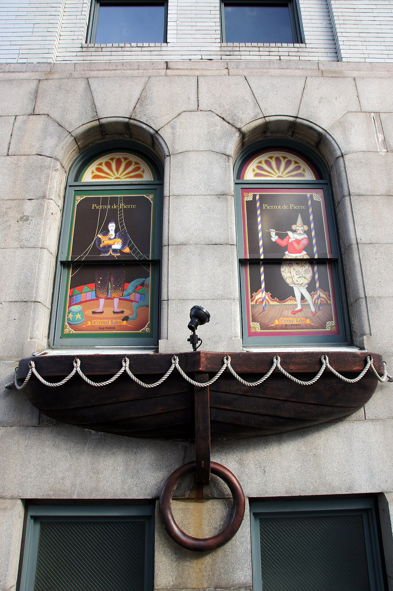
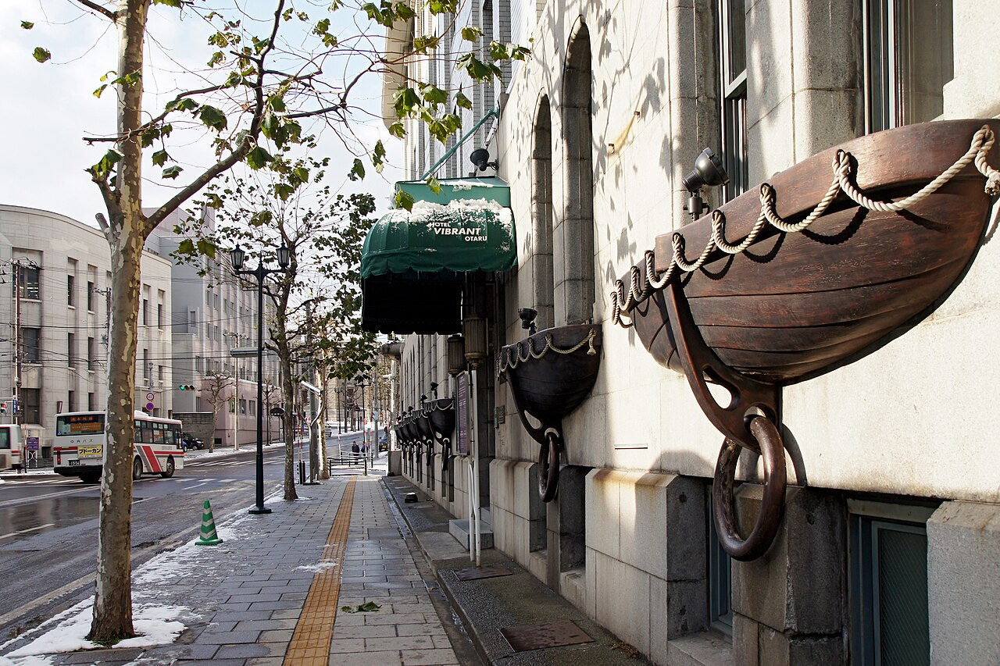
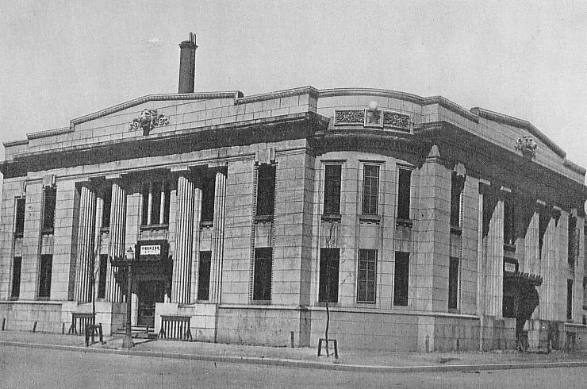
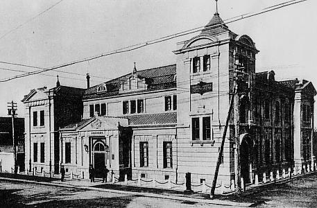
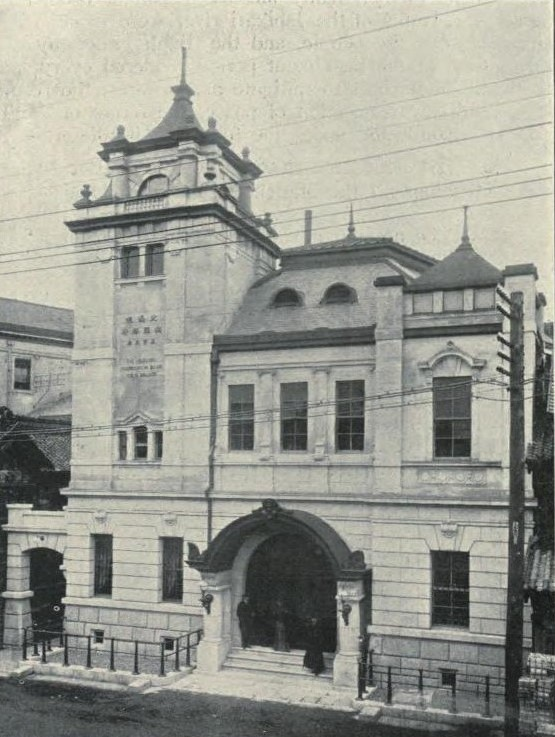
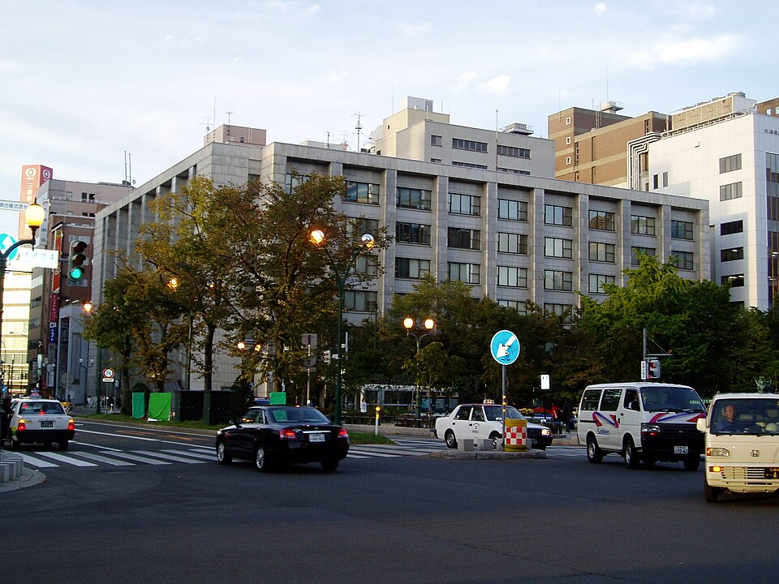

河
河谷禎昌
かわたに・さだまさ
拓銀頭取
役割：破綻時の最後の頭取。ソフィア向け融資を決裁
その後：懲役2年6月。最高裁で確定6
1990年前後〜2009年
北海道拓殖銀行は、バブル期にカブトデコムやソフィアなど不動産・リゾート企業へ融資を集中し、地価下落後も追加融資を続けた。1
1997年11月17日、合併延期後に預金減少、株価下落、市場性資金の調達難が重なり。自力再建を断念した。道内営業は北洋銀行、本州営業は中央信託銀行へ譲渡された。2
旧経営陣2人と融資先元社長は、ソフィア向け追加融資を巡る特別背任で有罪が確定した。3

北海道拓殖銀行は1900年に北海道拓殖銀行法に基づく特殊銀行として設立され、1950年に普通銀行へ転換し、1955年に都市銀行へ加入した。高度成長期には本州・海外へ店舗を拡大し、1970年代以降は国内外200を超える拠点を持つ大銀行となった。破綻を判別するには、地域金融機関を超えて事業領域を広げた銀行が、どの企業に資金を配分したかを確認する。1
この時期の拓銀は、北海道の企業と取引する銀行であるだけでなく、道外や海外にも拠点を持つ都市銀行だった。経営判断の対象は一つの支店の融資ではなく、銀行全体の資産構成と地域の金融機能に及んだ。後に融資先の問題が明らかになったとき、破綻を回避する判断は、個別企業への支援と銀行自身の資金繰りを同時に扱う判断となった。1
北海道拓殖銀行は、平成９年９月１２日、平成１０年４月に予定していた北海道銀行との合併を延期する旨発表するとともに、併せて、不良債権の処理および資本の増強策並びに経営の効率化策を発表し、その実施を図ったが、預金の減少に加え、株価が急激に下落する等市場の評価を得られず、さらに、市場性資金の取入れも困難になったことから、資金繰りが行き詰まるに至った。こうした情勢の下で、１１月１６日夕刻、同行から日本銀行に対し、（1）自力での業務継続は困難である、（2）北海道における金融機能を維持していく観点から受皿銀行に業務を引継ぐこととしたいが、ついては、預金保険機構に不良資産の買取り等を要請することとしたい、（3）同行においては、経営責任を明確にするため、取締役全員は辞任する予定である、との報告がなされた。 こうした状況を受け、日本銀行としては、現下の金融情勢および北海道拓殖銀行が北海道において重要な金融機能を果たしている事実を踏まえると、大蔵省検査による同行の財務計数を確認した上で、関係者間で協議を行い、（1）北海道拓殖銀行の業務を北洋銀行に引継ぐこととし、業務継承までの間、北海道拓殖銀行は通常通りの業務を継続すること、（2）北洋銀行への業務の引き継ぎに当たっては、預金保険機構が不良資産を買取る等、所要の支援を行うこと等を骨子とする処理方策（詳細は、後掲の日本銀行対外発表文を参照）を早急に取りまとめることが必要と判断した。
意味：日銀の政策文書が、破綻直前の拓銀からの報告内容と、北洋銀行への承継・預金保険機構の支援を一体で記録している。[URL](https://www.boj.or.jp/finsys/msfs/giji97015.htm)
バブル期、拓銀は不動産・建設・リゾート関連企業への融資を拡大した。カブトデコムは、1971年設立の建設会社を前身とし、1980年代に不動産賃貸・仲介・売買へ業容を広げ。1989年に店頭登録した。拓銀内部では1987年の投融資会議に慎重意見が記載され、1988年の事業調査室報告もグループ内取引と借入金過大を指摘していた。それでも1990年2月、融資は決裁された。2
カブトデコムには約40社のグループ企業があり、海外子会社・孫会社は14社だった。グループ内で売上を計上し、関連会社間の売掛金・買掛金を膨らませ、親会社から子会社へ資金を融通する構造では、地価上昇時には利益が上乗せされる一方。地価下落時には融資の回収可能性が低下する。拓銀が大規模融資を決裁した時点で、内部資料にはこの構造への警告が残っていた。1
特に，カブトデコムについては，拓銀内部において，問題を指摘する意見があり（昭和６２年３月の投融資会議の決裁書にＫ副頭取が慎重意見を記載したことなど。），そのような意見に応じてなされた昭和６３年の事業調査室の調査（以下「昭和６３年調査」又は「昭和６３年調査報告書」という。）では，「カブトデコムについては，子会社や関連会社との仕組み取引とみられるものが相当数あり，カブトグループ内の売掛金，買掛金が決済未了等のために異常にふくらんでおり，子会社やグループ内の取引では，売上高が計上されても実際の入金がずれこんでいる。また，借入金が過大になっており，カブトデコムから子会社への資金融通も行われている。」旨報告され，カブトデコムについては，表面上の売上高，利益をみるだけではその財務内容を把握できないこと，地価が上昇しているうちは，グループ内の取引によって利益が上乗せされるが，地価が下落に転じると多額の不良債権を抱えることになる構造であることなどが判明していた。
意味：内部調査が、グループ内取引や入金遅延と過大借入及び資金融通という構造的リスクを融資拡大前から把握していたことを示す。[URL](https://www.courts.go.jp/assets/hanrei/hanrei-pdf-8639.pdf)
1990年以降、金融引締めと地価下落が進み、カブトデコムの事業収益と株価は悪化した。借入金は1989年の146億円から1990年2月の386億円へ増加し、1992年3月期にはカブトグループ6社の連結最終損益が49億円の赤字となった。エイペックス会員権の売上334億3,500万円のうち153億6,200万円がカブトデコムに流用されたとも認定された。日銀考査は1991年12月にグループ融資残高約1,800億円を指摘した。32
それでも融資を直ちに打ち切る決定はなされなかった。銀行側には、融資先を破綻させれば拓銀自身の債権回収が困難になり、北海道の企業倒産と金融秩序の混乱が拡大するという判断があった。民事裁判では、融資継続を一定の経営判断として理解できる場面があるとされた。他方で、情報収集や担保評価が不足していれば、判断の過程が責任追及の対象となった。3
ところが，平成２年２月１３日開催の投融資会議において，法人部は，カブトデコムの売上高，経常利益，純利益の推移及び見通し，受注実績の内訳の概要，主要勘定科目の推移，主な購入物件，株価動向等を記載した簡略な資料を提出したにとどまり，昭和６３年調査のような詳細な企業調査を実施することなく，融資を付議した。 被告らは，一定額以上の融資についての決定を委ねられた投融資会議の構成員たる取締役として，また，金融の専門家として，第１融資を決裁する前提として，法人部に対して，昭和６３年調査のような詳細かつ綿密な企業調査を行ってカブトデコムの実態を明らかにするよう指示すべき注意義務があったにもかかわらず，平成２年２月１３日開催の投融資会議において，そのような指示をすることなく，漫然と第１融資を決裁した注意義務違反がある。
意味：裁判所は、問題資料が存在していたのに調査を深めず、取締役が融資を決裁した点を注意義務違反とした。[URL](https://www.courts.go.jp/assets/hanrei/hanrei-pdf-8639.pdf)
ソフィアグループについても、拓銀はリゾート開発や不動産事業を支援した。1995年8月28日には、分離再編に伴う納税資金21億3,300万円を融資する方針を承認した。審査部門は、ソフィアグループの低収益・赤字体質や保全不足を把握し、分離再編を急ぐべきだと指摘していた。しかし承認されないまま融資が継続し、山内宏、河谷禎昌とソフィアグループ元代表の中村揚一の融資判断が刑事裁判で問題となった。45
ソフィア向け追加融資では、融資を決める側と資金を受ける側の関係が刑事責任の中心になった。山内は1994年まで頭取を務め、その後に河谷が後任となった。二人の在任時期をまたいで追加融資が行われ、中村は融資先企業の代表として関与したと認定された。札幌高裁は三者の共謀共同正犯を認定し、最高裁の上告棄却によって実刑判決が確定した。6
拓銀は，平成５年７月５日の経営会議（被告Ａ，被告Ｅ，被告Ｆ及び被告Ｈも出席した。）において，テルメインターナショナルホテルシステムに対するテルメホテル運転資金としての１１億５０００万円の融資，ソフィアに対するテルメホテル設備資金としての５９億円の融資をそれぞれ承認した。 同経営会議において，拓銀グループのソフィアグループに対する貸付残高は，同年５月末現在で４８２億２７００万円に達していること，そのうち実効担保価格は２６６億０１００万円であり，２１６億２６００万円が保全不足であること，上記貸付残高は，向こう１年間で１７８億円増の６６０億２７００万円に膨らむ見込みであること，各事業とも赤字タレ流しの状況となっていること，Ｊの実質的影響力を排除し，拓銀主導の経営体制を確立することが必要であることなどが報告された。 特に，同年４月に開業したテルメホテル事業については，借入過多のため金利負担だけでも年間１３億円に達すること，開業初年度（平成５年度）の売上高は現状からすると３７億円程度であり，計画額の６０億円よりも大幅なマイナスとなること，今後の金利負担を考えると単年度黒字の目処が立たないこと，このままでは年間約３０億円の赤字補填資金が必要となり，売上増強，人員削減を中心とした合理化の推進が急務であることなどが報告された。
意味：ソフィア向け融資では、巨額の保全不足と赤字継続が経営会議で報告されながら、融資承認が続いた。[URL](https://www.courts.go.jp/assets/hanrei/hanrei-pdf-8603.pdf)
1997年4月1日、拓銀と北海道銀行の合併構想が発表された。拓銀は9月12日に合併延期と不良債権処理、資本増強、経営効率化策を発表したが、預金減少と株価下落が進み。市場性資金の調達も困難になった。11月16日、拓銀は日銀に自力継続が困難だと報告し、翌17日に経営破綻を公表した。日銀は北海道の金融機能を維持するため、受皿銀行への業務引継ぎと預金保険機構による不良資産買取りを組み合わせる方針を示した。78
破綻公表の前には、合併相手との協議と再建策の発表があった。しかし市場の評価を回復できず、預金の減少と株価下落が資金調達を制約した。日銀は単純な清算ではなく、預金払戻しなどの業務を継続するための資金供与を不可欠と整理した。ここで松下康雄総裁が公表した方針は、拓銀の法人をそのまま維持することではなく、北海道の金融機能を受皿へ移す処理だった。78
北海道拓殖銀行は、本年９月１２日、来年４月に予定していた北海道銀行との合併を延期する旨発表するとともに、併せて、不良債権の処理および資本の増強策並びに経営の効率化策を発表し、これまでその実施に向けて最大限努力してきたところであるが、合併延期発表後、預金の減少に加え、株価が急激に下落する等市場の評価を得られず、さらに、市場性資金の取入れも困難となり、資金繰りが行き詰まるに至った。 ２．かかる状況を踏まえ、今般、同行から、以下のような報告を受けた。 （1）今後の自力での業務継続は困難である。 （2）北海道における金融機能を維持していく観点から受皿銀行に業務を引継ぐこととしたいが、ついては、預金保険機構に不良資産の買取り等を要請することとしたい。 （3）このような事態を招いた経営責任を明確にするため、河谷頭取をはじめ取締役全員は辞任する予定である。
意味：日銀が、合併延期後の預金減少・株価急落・市場性資金の調達難を破綻の直接経路として説明し、経営責任にも言及している。[URL](https://www.boj.or.jp/about/press/danwa/dan9711b.htm)
破綻後、道内営業は北洋銀行、本州営業は中央信託銀行が受皿となった。北洋銀行による道内営業の譲受けは公正取引委員会の審査を受け、預金約20％、貸出約30％の規模となった。日銀は、預金払戻しなどの業務継続に資金不足が生じれば信用制度全体の安定が脅かされるおそれがあるとして、特別措置を決定した。金融監督庁の1998年6月検査では、総資産6兆8,196億円のうち分類資産が1兆2,723億円となった。910
営業譲渡は、道内と本州で受皿を分ける処理だった。北洋銀行は道内の預金、健全資産、店舗などを引き継ぎ。中央信託銀行は本州地区の営業を引き継いだ。預金保険機構には不良資産の買取り等が要請され、日銀の特別貸付と組み合わせて決済機能と預金払戻しを維持した。金融監督庁の検査が示した分類資産は、破綻処理の規模を公的資料で確認する基準となった。1110
本件においては，預金業務，貸出業務について，営業譲受け後の北海道及び道内の一部地域における北洋銀行のシェアが高くなる（北海道では預金で約20%，貸出で約30%）。 しかしながら，拓銀は，資金調達難から自主再建を断念しており，このために本件譲渡を決めたものである。また，(1)で画定したいずれの取引分野においても，有力な競争業者が存在する。 これらの事情を総合的に勘案すれば，(1)で画定したいずれの取引分野においても，競争を実質的に制限することとはならないと判断した。
意味：北洋銀行への営業譲渡が、競争上の懸念を認識しつつも、拓銀の資金調達難と自主再建断念を理由に認められたことが分かる。[URL](https://www.jftc.go.jp/dk/kiketsu/toukeishiryo/keiei/h10jirei8-01.html)
拓銀は1998年11月16日に北洋銀行と中央信託銀行へ営業を譲渡し、1999年3月31日に解散した。その後、ソフィア向け融資を巡る刑事裁判で、札幌高裁は2006年8月31日に山内宏と河谷禎昌へ懲役2年6月。中村揚一へ懲役1年6月を言い渡した。最高裁第三小法廷は2009年11月9日に上告を棄却し、実刑判決が確定した。民事裁判では、旧取締役の情報収集・分析・担保評価と融資決裁の過程が検討され、整理回収機構が損害賠償を請求した。62
判決は、融資の結果だけではなく、融資を決めた時点の資料と検討の仕方を対象にした。カブトデコム事件では、内部調査や日銀考査で問題が示された後の決裁が民事責任の論点となった。ソフィア事件では、回収可能性の認識と追加融資の目的が刑事責任の論点となった。破綻処理、行政検査、民事請求、刑事判決は別々の手続で進み。2009年の最高裁判断によって刑事事件が確定した。25










| 旧北海道拓殖銀行本店 | 北海道札幌市中央区大通西3丁目7番地付近 | 本店・破綻処理の中心 | 18 |
| 北洋銀行本店 | 北海道札幌市中央区大通西3丁目7番地 | 道内営業の受皿 | 9 |
| 札幌地方裁判所 | 北海道札幌市中央区大通西11丁目 | 民事・刑事裁判 | 4 |
| 最高裁判所 | 東京都千代田区隼町4-2 | 刑事上告審 | 6 |
| 日本銀行本店 | 東京都中央区日本橋本石町2-1-1 | 特別貸付決定・金融システム対応 | 8 |
| 北海道銀行本店 | 北海道札幌市中央区大通西4丁目1 | 合併交渉相手 | 14 |
| 旧拓銀小樽支店 | 北海道小樽市色内1丁目3番1号付近 | 旧支店建物 | 19 |
融資はカブトデコムのグループ内取引と不動産・リゾート事業に流れ、地価と株価の下落後もソフィアへの追加融資が続いた。破綻後は営業を道内と本州に分け、受皿銀行と預金保険制度を用いて金融機能を維持した。28
かわたに・さだまさ
拓銀頭取
役割：破綻時の最後の頭取。ソフィア向け融資を決裁
その後：懲役2年6月。最高裁で確定6
やまうち・ひろし
拓銀頭取
役割：河谷の前任。ソフィア向け追加融資で有罪
その後：懲役2年6月。最高裁で確定6
なかむら・よういち
ソフィアグループ元代表
役割：追加融資に関与した融資先企業の代表
その後：懲役1年6月。最高裁で確定6
まつした・やすお
日本銀行総裁
役割：拓銀破綻時の日銀特別貸付方針を公表
その後：特別措置を決定7
受皿銀行
役割：拓銀道内営業を譲受け
その後：預金約20％、貸出約30％の規模9
合併交渉相手
役割：拓銀との合併構想と延期の相手
その後：個人名は未確認14
債権承継・訴訟主体
役割：拓銀から債権等を承継し旧取締役を提訴
その後：民事責任を追及4
受皿銀行
役割：拓銀本州地区営業を譲受け
その後：個人名は未確認11
監督官庁担当官
役割：返済財源のない企業への融資を問題視
その後：氏名は未確認2
融資先
役割：リゾート・不動産事業の融資先
その後：個別人物の氏名は未確認4
融資先企業
役割：不動産・建設事業を拡大し拓銀融資を受けた
その後：融資事件で民事責任が争われた1
中央銀行
役割：特別貸付と金融システム対応を実施
その後：拓銀破綻処理を支援8
監督機関
役割：清算検査で分類資産を把握
その後：金融検査体制を再編10
競争当局
役割：北洋銀行による営業譲受けを審査
その後：競争を実質的に制限しないと判断9
相関図は、ソフィアとカブトデコムへの資金の出し手・受け手、合併交渉と営業譲渡の相手。破綻処理と責任追及を担った機関を示す。闇社会に関する線は、調査メモで確認されなかった関係を未確認として表示する。
上司と部下・後任。山内は1994年まで頭取を務め、退任後に河谷が後任となった。両者は拓銀の経営トップとして、ソフィア向け融資の前後の時期を分担した。刑事裁判では両名の融資判断が一体的に問題となった。共同通信、最高裁上告棄却報道136
資金の出し手と受け手。山内在任期の拓銀がソフィアグループを融資先として支援し、中村は融資先企業の代表として追加融資に関与したと認定された。判例紹介5
資金の出し手と受け手。河谷在任期の追加融資について、裁判所は回収見込みを認識しながら融資したとして共謀を認定した。最高裁上告棄却報道6
対立・確執。大蔵省担当官はカブトデコム向け融資について返済財源のない企業への融資を問題視した。裁判所2
対立・確執。合併延期の背景には、不良債権の認識・処理計画について両行の隔たりがあった。日本銀行7
資金の出し手と受け手。拓銀の道内営業を北洋銀行が受け継ぐ関係となった。公正取引委員会9
資金の出し手と受け手。本州地区の営業譲渡をめぐる受皿関係。日本銀行11
対立・確執。債権を承継した整理回収機構が、融資決裁の注意義務違反を理由に損害賠償請求を行った。裁判所4
ところが，平成２年２月１３日開催の投融資会議において，法人部は，カブトデコムの売上高，経常利益，純利益の推移及び見通し，受注実績の内訳の概要，主要勘定科目の推移，主な購入物件，株価動向等を記載した簡略な資料を提出したにとどまり，昭和６３年調査のような詳細な企業調査を実施することなく，融資を付議した。 被告らは，一定額以上の融資についての決定を委ねられた投融資会議の構成員たる取締役として，また，金融の専門家として，第１融資を決裁する前提として，法人部に対して，昭和６３年調査のような詳細かつ綿密な企業調査を行ってカブトデコムの実態を明らかにするよう指示すべき注意義務があったにもかかわらず，平成２年２月１３日開催の投融資会議において，そのような指示をすることなく，漫然と第１融資を決裁した注意義務違反がある。
意味：裁判所は、問題資料が存在していたのに調査を深めず、取締役が融資を決裁した点を注意義務違反とした。[URL](https://www.courts.go.jp/assets/hanrei/hanrei-pdf-8639.pdf)
確認できた判決・日銀・金融庁・国会資料では、暴力団、総会屋、仕手筋、政治家。フィクサーとの具体的な関係は裏付けられない。カブトグループの海外子会社14社は確認できるが、不正資金の海外流出は確認できない。
組織名・個人名未確認 確認できない
個人・組織未確認 確認できない
個人・組織未確認 確認できない
個人名未確認 確認できない
口座・法人未確認 確認できない
個人名未確認 確認できない
個人・団体未確認 確認できない
金額・受領者未確認 確認できない
○政府委員 金融検査におきましては、先生の御指摘のように資産査定を中心といたしますが、それ以外にも、銀行の運営が健全にされているかどうかという観点からさまざまな角度からチェックをしております。ただ、一方で、銀行法にもございますように、当初から犯罪捜査を目的として入るということではございませんので、そういう限界はありますけれども、その中で、銀行の健全な運営という面から見て問題のある融資についてはその都度指摘をするということはやっております。 ○佐々木（憲）委員 問題のある融資ということで、具体的に私は、総会屋の問題や、あるいは法違反の問題についてチェックする、そういう項目があるのかと聞いているわけです。 ○政府委員 御指摘のように、問題のある融資という中には、いわば社会的批判を受けるということで総会屋、暴力団等に対する融資等が含まれますが、ただ、総会屋の場合に、単にそれが通常の商行為としての取引である場合でございますと、それが利益供与とか、そういう形をとっておらないという場合には、それ自身直ちにすべて問題であるという指摘は難しいかと思います。 ○佐々木（憲）委員 今問題になっておりますのが、意識的にこういう事実関係を大蔵検査が見て見ぬふりをしていた、あるいは事実を隠ぺいしていた、こういう関係が問われているわけであります。 私は、この背後に、大蔵金融検査部門の銀行との間の非常に根深い癒着構造があるのではないか。例えば、破綻したあの拓銀の検査の際、どういうことが行われていたか。これは、きょうの北海道新聞ですけれども、一九九四年八月十日ごろ、東京都内で大蔵省検査官ＯＢの拓銀顧問と、つまり天下った先の拓銀の顧問と同省職員らとの懇親会が開かれた後、この顧問が谷内容疑者ら四人の職員を誘い、都内の飲食店で接待した。費用は全額拓銀側が負担した。九四年は既に拓銀の経営悪化が表面化していたときで、大蔵省の立入検査は同年八月の接待から約十日後だった。こういう事実も指摘をされている。 したがって、今大事なのは、銀行とのなれ合い、あるいは銀行との癒着、こういう点にきちっとメスを入れるということだと思うわけであります。
意味：拓銀検査をめぐり、国会で大蔵省検査部門と銀行の接待・天下り・癒着疑惑が具体的に追及された。ただし、ここで述べられた接待内容は委員の引用・指摘であり、会議録自体が事実を確定したものではない。[URL](https://kokkai.ndl.go.jp/simple/detail?minId=114204629X00719980204)
| 旧拓銀経営陣 | 0人 | 3人 | 刑事有罪となった旧頭取2人 | 6 |
| カブトデコム・ソフィア | 融資継続 | 破綻・清算 | 事業継続期間と資金調達期間が延長されたが最終的に破綻・清算 | 1 |
| 預金者 | 預金保護 | 取引銀行変更 | 営業譲渡により預金保護の対象となった | 7 |
| 株主 | 0件 | 拓銀解散件 | 株価下落と解散による損失 | 7 |
| 北洋銀行 | 預金約20％・貸出約30％シェア | 0シェア | 道内営業を取得した後の北海道内シェア | 9 |
| 日本銀行・預金保険機構 | 金融機能維持 | 公的負担 | 特別貸付・不良資産買取り等を担った | 8 |
| 札幌高裁 | 2006-08-31 | 懲役2年6月 |
| 最高裁 | 2009-11-09 | 上告棄却・確定 |
| 札幌高裁 | 2006-08-31 | 懲役2年6月 |
| 最高裁 | 2009-11-09 | 上告棄却・確定 |
商法違反・特別背任。確定6
| 札幌高裁 | 2006-08-31 | 懲役1年6月 |
| 最高裁 | 2009-11-09 | 上告棄却・確定 |
商法違反・特別背任の共謀共同正犯。確定6
| 札幌高裁 | 2005-03-25 | 融資判断の調査・検討不足を認定 |
| 最高裁 | 2008-01-28 | 旧経営陣への賠償命令が報道 |
| 日本銀行 | 1997-11-17 | 特別貸付措置を決定 |
破綻金融機関への特別措置。実施8
| 金融監督庁 | 1998-06-30 | 分類資産1兆2,723億円を把握 |
拓銀清算検査・資産査定。実施10
| 公正取引委員会 | 1998 | 競争を実質的に制限しないと判断 |
北洋銀行による営業譲受けの競争審査。確定9
北海道拓殖銀行は、本年９月１２日、来年４月に予定していた北海道銀行との合併を延期する旨発表するとともに、併せて、不良債権の処理および資本の増強策並びに経営の効率化策を発表し、これまでその実施に向けて最大限努力してきたところであるが、合併延期発表後、預金の減少に加え、株価が急激に下落する等市場の評価を得られず、さらに、市場性資金の取入れも困難となり、資金繰りが行き詰まるに至った。 ２．かかる状況を踏まえ、今般、同行から、以下のような報告を受けた。 （1）今後の自力での業務継続は困難である。 （2）北海道における金融機能を維持していく観点から受皿銀行に業務を引継ぐこととしたいが、ついては、預金保険機構に不良資産の買取り等を要請することとしたい。 （3）このような事態を招いた経営責任を明確にするため、河谷頭取をはじめ取締役全員は辞任する予定である。
意味：日銀が、合併延期後の預金減少・株価急落・市場性資金の調達難を破綻の直接経路として説明し、経営責任にも言及している。[URL](https://www.boj.or.jp/about/press/danwa/dan9711b.htm)
日本銀行としては、わが国金融システムの安定確保の観点、および同行が北海道において重要な金融機能を果たしている事実に鑑み、これまで同行が果たしてきた金融機能自体は、是非とも維持することが不可欠であると考えている。 以上の点を踏まえ、日本銀行としては、現在実施されている大蔵省検査による同行の財務計数を確認の上で、次のような点を基軸とする処理方策を関係者の間で協議しつつ、早急に取りまとめることが必要と判断している。 （1）北海道拓殖銀行の業務を引継ぐ受皿銀行は北洋銀行とし、また、地域経済の安定を図る観点から、他の地元金融機関にも協力を求める。北洋銀行への承継までの間においては、北海道拓殖銀行は通常通りの業務を継続し、預金者や健全な融資先等の取引に支障が生じないよう万全の配慮を払う。 （2）受皿銀行には、北海道拓殖銀行の有する健全な資産・預金等のみが引継がれることとし、預金保険機構が不良資産を買取る等所要の支援を行う。この場合、不良債権から生ずる損失については、まず北海道拓殖銀行の自己資本を充当する。
意味：破綻処理が、金融機能を維持しながら健全資産と不良資産を分離する方式だったことを示す。[URL](https://www.boj.or.jp/about/press/danwa/dan9711b.htm)
北海道拓殖銀行は、平成９年９月１２日、平成１０年４月に予定していた北海道銀行との合併を延期する旨発表するとともに、併せて、不良債権の処理および資本の増強策並びに経営の効率化策を発表し、その実施を図ったが、預金の減少に加え、株価が急激に下落する等市場の評価を得られず、さらに、市場性資金の取入れも困難になったことから、資金繰りが行き詰まるに至った。こうした情勢の下で、１１月１６日夕刻、同行から日本銀行に対し、（1）自力での業務継続は困難である、（2）北海道における金融機能を維持していく観点から受皿銀行に業務を引継ぐこととしたいが、ついては、預金保険機構に不良資産の買取り等を要請することとしたい、（3）同行においては、経営責任を明確にするため、取締役全員は辞任する予定である、との報告がなされた。 こうした状況を受け、日本銀行としては、現下の金融情勢および北海道拓殖銀行が北海道において重要な金融機能を果たしている事実を踏まえると、大蔵省検査による同行の財務計数を確認した上で、関係者間で協議を行い、（1）北海道拓殖銀行の業務を北洋銀行に引継ぐこととし、業務継承までの間、北海道拓殖銀行は通常通りの業務を継続すること、（2）北洋銀行への業務の引き継ぎに当たっては、預金保険機構が不良資産を買取る等、所要の支援を行うこと等を骨子とする処理方策（詳細は、後掲の日本銀行対外発表文を参照）を早急に取りまとめることが必要と判断した。
意味：日銀の政策文書が、破綻直前の拓銀からの報告内容と、北洋銀行への承継・預金保険機構の支援を一体で記録している。[URL](https://www.boj.or.jp/finsys/msfs/giji97015.htm)
本件においては，預金業務，貸出業務について，営業譲受け後の北海道及び道内の一部地域における北洋銀行のシェアが高くなる（北海道では預金で約20%，貸出で約30%）。 しかしながら，拓銀は，資金調達難から自主再建を断念しており，このために本件譲渡を決めたものである。また，(1)で画定したいずれの取引分野においても，有力な競争業者が存在する。 これらの事情を総合的に勘案すれば，(1)で画定したいずれの取引分野においても，競争を実質的に制限することとはならないと判断した。
意味：北洋銀行への営業譲渡が、競争上の懸念を認識しつつも、拓銀の資金調達難と自主再建断念を理由に認められたことが分かる。[URL](https://www.jftc.go.jp/dk/kiketsu/toukeishiryo/keiei/h10jirei8-01.html)
しかし，エクイティファイナンス及びこれに対するバックファイナンスが一般的に行われていたとしても，第１融資のように，融資を返済する事業収益力のない借主に対する融資が，当時一般的であったとは到底いえない。 第１融資が銀行業務の本来の形式を逸脱した融資であったことは，旧大蔵省銀行局の担当官が，第１融資に関して，平成２年６月７日に，拓銀に対し，「売上高，経常利益に比べ引受高が大きすぎる，まともな返済財源のない企業に貸出しをするのは問題である。」と指摘したこと，当時，マスコミが「異例の第三者割当を後押し」「不透明感が漂う第三者割当増資」などと指摘していること，拓銀が，平成３年５月２０日付けの文書において，第１融資について，「時代に流され，融資の基本がおろそかになった」旨の反省を記載していること，平成５年に作成されたカブト問題特別調査委員会の調査報告書（以下「カブト問題調査報告書」という。）において第１融資は組織的討議・検討が不十分であったと評価していることなどから明らかである。
意味：裁判所は、当局の警告や拓銀自身の反省文と特別調査委員会報告を並べ、融資が通常の銀行業務から逸脱したと認定している。[URL](https://www.courts.go.jp/assets/hanrei/hanrei-pdf-8639.pdf)
特に，カブトデコムについては，拓銀内部において，問題を指摘する意見があり（昭和６２年３月の投融資会議の決裁書にＫ副頭取が慎重意見を記載したことなど。），そのような意見に応じてなされた昭和６３年の事業調査室の調査（以下「昭和６３年調査」又は「昭和６３年調査報告書」という。）では，「カブトデコムについては，子会社や関連会社との仕組み取引とみられるものが相当数あり，カブトグループ内の売掛金，買掛金が決済未了等のために異常にふくらんでおり，子会社やグループ内の取引では，売上高が計上されても実際の入金がずれこんでいる。また，借入金が過大になっており，カブトデコムから子会社への資金融通も行われている。」旨報告され，カブトデコムについては，表面上の売上高，利益をみるだけではその財務内容を把握できないこと，地価が上昇しているうちは，グループ内の取引によって利益が上乗せされるが，地価が下落に転じると多額の不良債権を抱えることになる構造であることなどが判明していた。
意味：内部調査が、グループ内取引や入金遅延と過大借入及び資金融通という構造的リスクを融資拡大前から把握していたことを示す。[URL](https://www.courts.go.jp/assets/hanrei/hanrei-pdf-8639.pdf)
ところが，平成２年２月１３日開催の投融資会議において，法人部は，カブトデコムの売上高，経常利益，純利益の推移及び見通し，受注実績の内訳の概要，主要勘定科目の推移，主な購入物件，株価動向等を記載した簡略な資料を提出したにとどまり，昭和６３年調査のような詳細な企業調査を実施することなく，融資を付議した。 被告らは，一定額以上の融資についての決定を委ねられた投融資会議の構成員たる取締役として，また，金融の専門家として，第１融資を決裁する前提として，法人部に対して，昭和６３年調査のような詳細かつ綿密な企業調査を行ってカブトデコムの実態を明らかにするよう指示すべき注意義務があったにもかかわらず，平成２年２月１３日開催の投融資会議において，そのような指示をすることなく，漫然と第１融資を決裁した注意義務違反がある。
意味：裁判所は、問題資料が存在していたのに調査を深めず、取締役が融資を決裁した点を注意義務違反とした。[URL](https://www.courts.go.jp/assets/hanrei/hanrei-pdf-8639.pdf)
拓銀は，平成５年７月５日の経営会議（被告Ａ，被告Ｅ，被告Ｆ及び被告Ｈも出席した。）において，テルメインターナショナルホテルシステムに対するテルメホテル運転資金としての１１億５０００万円の融資，ソフィアに対するテルメホテル設備資金としての５９億円の融資をそれぞれ承認した。 同経営会議において，拓銀グループのソフィアグループに対する貸付残高は，同年５月末現在で４８２億２７００万円に達していること，そのうち実効担保価格は２６６億０１００万円であり，２１６億２６００万円が保全不足であること，上記貸付残高は，向こう１年間で１７８億円増の６６０億２７００万円に膨らむ見込みであること，各事業とも赤字タレ流しの状況となっていること，Ｊの実質的影響力を排除し，拓銀主導の経営体制を確立することが必要であることなどが報告された。 特に，同年４月に開業したテルメホテル事業については，借入過多のため金利負担だけでも年間１３億円に達すること，開業初年度（平成５年度）の売上高は現状からすると３７億円程度であり，計画額の６０億円よりも大幅なマイナスとなること，今後の金利負担を考えると単年度黒字の目処が立たないこと，このままでは年間約３０億円の赤字補填資金が必要となり，売上増強，人員削減を中心とした合理化の推進が急務であることなどが報告された。
意味：ソフィア向け融資では、巨額の保全不足と赤字継続が経営会議で報告されながら、融資承認が続いた。[URL](https://www.courts.go.jp/assets/hanrei/hanrei-pdf-8603.pdf)
しかるに，本件第２融資が開始される前の時点におけるソフィアグループの業況をみると，グループ各社とも低収益，赤字体質であり，特に，既存のタウナステルメ事業と平成５年４月に開業したテルメホテル事業は，当初の事業収支計画を大幅に下回り，到底利益を見込むことのできない状況にあった。そして，審査第１部は，平成５年７月５日の経営会議において，このまま融資を継続すると，同グループ全体で年間１７８億円（うち，テルメホテル事業単体で年間３０億円）もの赤字補填資金をたれ流しすることになるとして，ソフィアグループの分離再編を進めていくことが急務であると指摘したが，これが承認されないまま漫然と融資が継続され，結局，平成６年３月期における拓銀グループのソフィアグループに対する授信状況は，前年期（平成５年５月期）に比べて，貸出総額が約１５１億円，保全不足額が約１２３億円も増大する結果となった。 このような経緯からすれば，本件第２融資を開始する時点において，このまま融資を継続してもソフィアグループの業績が改善する見込みは低く，かえって拓銀の損失が増大するおそれのあることが容易に予測されたというべきである。
意味：裁判所は、審査部の警告が承認されないまま融資が継続し、貸出と保全不足が拡大した経緯を認定している。[URL](https://www.courts.go.jp/assets/hanrei/hanrei-pdf-8603.pdf)
○政府委員（山口公生君） そういうことで話し合いがなかなかまとまらないということであったわけですけれども、この不良債権というものは二つ概念がありまして、一つは公表不良債権という、これは例えば破綻先、延滞は六カ月、それから金利減免は公定歩合以下というような一つの基準で、どこの銀行も同じで出してくるのが公表不良債権でございます。 ところが、ここで問題になったのは、そうでないものであっても相手が破綻するのではないかと。そうしたら元も子もなくなるわけです。そうした公表の不良債権とは違った、実質取れるか取れないか、つまり回収可能か可能でないかという意味の不良債権の額が、回収不能が非常に多いのではないかというようなことで疑念を出されたわけです。 ○国務大臣（三塚博君） そういう中にございまして、ただいま銀行局長が言いましたような流れ、そして資金ショートが確定的になりましたことにかんがみまして、北海道銀行、拓殖銀行からこの措置に対して通告が本朝正式に、早朝でありますが、出されることにより、対応策を考えますと。預金者保護も大事、また拓銀を取引銀行として資金運用をし事業をやっておる取引先も大事、こういうことで、そこを保護し取り進めていくことは大蔵大臣として当然の責任かな、こう思う次第であります。 そういうことで、北海道地域に対する金融の安定、本件が全体の経済の足を引っ張るということになりませんように、最善の道は何かということでありまして、拓銀が道銀そして北洋銀行への事業承継の中で万全を期するということでございますから、北海道経済、ひいては日本経済という高い観点からその措置を講じさせていただいたところでございます。
意味：政府答弁は、公表不良債権と実質的な回収不能の乖離を認め、拓銀処理を北海道経済・日本経済の安定問題として扱っている。[URL](https://kokkai.ndl.go.jp/simple/detail?minId=114114269X00819971117)
○政府委員 金融検査におきましては、先生の御指摘のように資産査定を中心といたしますが、それ以外にも、銀行の運営が健全にされているかどうかという観点からさまざまな角度からチェックをしております。ただ、一方で、銀行法にもございますように、当初から犯罪捜査を目的として入るということではございませんので、そういう限界はありますけれども、その中で、銀行の健全な運営という面から見て問題のある融資についてはその都度指摘をするということはやっております。 ○佐々木（憲）委員 問題のある融資ということで、具体的に私は、総会屋の問題や、あるいは法違反の問題についてチェックする、そういう項目があるのかと聞いているわけです。 ○政府委員 御指摘のように、問題のある融資という中には、いわば社会的批判を受けるということで総会屋、暴力団等に対する融資等が含まれますが、ただ、総会屋の場合に、単にそれが通常の商行為としての取引である場合でございますと、それが利益供与とか、そういう形をとっておらないという場合には、それ自身直ちにすべて問題であるという指摘は難しいかと思います。 ○佐々木（憲）委員 今問題になっておりますのが、意識的にこういう事実関係を大蔵検査が見て見ぬふりをしていた、あるいは事実を隠ぺいしていた、こういう関係が問われているわけであります。 私は、この背後に、大蔵金融検査部門の銀行との間の非常に根深い癒着構造があるのではないか。例えば、破綻したあの拓銀の検査の際、どういうことが行われていたか。これは、きょうの北海道新聞ですけれども、一九九四年八月十日ごろ、東京都内で大蔵省検査官ＯＢの拓銀顧問と、つまり天下った先の拓銀の顧問と同省職員らとの懇親会が開かれた後、この顧問が谷内容疑者ら四人の職員を誘い、都内の飲食店で接待した。費用は全額拓銀側が負担した。九四年は既に拓銀の経営悪化が表面化していたときで、大蔵省の立入検査は同年八月の接待から約十日後だった。こういう事実も指摘をされている。 したがって、今大事なのは、銀行とのなれ合い、あるいは銀行との癒着、こういう点にきちっとメスを入れるということだと思うわけであります。
意味：拓銀検査をめぐり、国会で大蔵省検査部門と銀行の接待・天下り・癒着疑惑が具体的に追及された。ただし、ここで述べられた接待内容は委員の引用・指摘であり、会議録自体が事実を確定したものではない。[URL](https://kokkai.ndl.go.jp/simple/detail?minId=114204629X00719980204)
○政府委員（日野正晴君） 金融監督庁は、御案内のとおり、去る六月二十二日に発足したばかりでございまして、まだ一年たっておりませんので、年次報告書といった立派なものを提出あるいは作成するような段階に至っていないということをまず御理解いただきたいと思います。 しかし、金融行政に関しましてその情報を国民の皆様方に適切に提供していくということは、これから金融監督庁が金融行政を開かれたものにしていくということから考えますと、大変重要なことであるというふうに考えております。 それから、破綻金融機関についての情報開示のあり方についての御質問がございましたが、これは実はきのうでございますか、拓銀につきましては清算検査をいたしましたので、私どもが検査いたしました拓銀の清算検査の結果を分類債権ごとに発表させていただいたところでございまして、これは新聞等でも公表されているところでございます。 そのほか拓銀以外の金融機関の破綻の際にどういつだ情報が開示されているかということでございますが、例えば、最近では、山一証券の場合は簿外債務の状況、顧客からの預かり資産の保全状況、それから北拓の場合には今申し上げましたように、破綻した際には受け皿銀行に対して業務を引き継ぐ際に総資産の査定状況などについても発表させていただいているところでございますが、冒頭にも申し上げましたように、これから開かれた金融行政ということを目指すために、できるだけいろいろな形で国民の皆様方にこの情報を開示してまいりたいと考えているところでございます。
意味：破綻後の清算検査結果と分類債権の公表をめぐる、金融監督庁の説明責任に関する答弁である。[URL](https://kokkai.ndl.go.jp/simple/detail?minId=114314057X00619981007)
金融機関の資産査定と分類資産の把握が重視された。20
大蔵省から金融検査・監督機能を分離する方向が進み、金融検査体制が再編された。21
営業譲渡先に対して、贈与、貸付け。資産買取り等を行う枠組みが整備された。22
営業を分割し、道内・本州の受皿へ移す処理が実施された。11
情報収集・分析・検討過程の合理性が問われることが示された。2
回収見込みを欠く追加融資は刑事責任の対象となり得ることが示された。5
旧拓銀側：融資継続は既存債権の回収を増やし、拓銀の信用不安や北海道経済の混乱を防ぐための経営判断だったと主張している。3
裁判所：民事上は合理性が認められる場面もあるが、情報収集・分析・担保評価が不十分なら注意義務違反となると判断した。2
検察側：ソフィアグループは実質倒産状態で、回収可能性がないことを認識しながら追加融資したと主張した。6
被告側：追加融資は既存債権を保全し、拓銀や地域経済の損失を最小化するためだったと主張している。23
国会議員：拓銀の検査をめぐり、大蔵省検査部門と銀行の接待・天下り・癒着疑惑を指摘した。24
政府委員：金融検査は犯罪捜査を目的とせず、健全な運営の観点から問題融資を指摘するものだと説明した。24